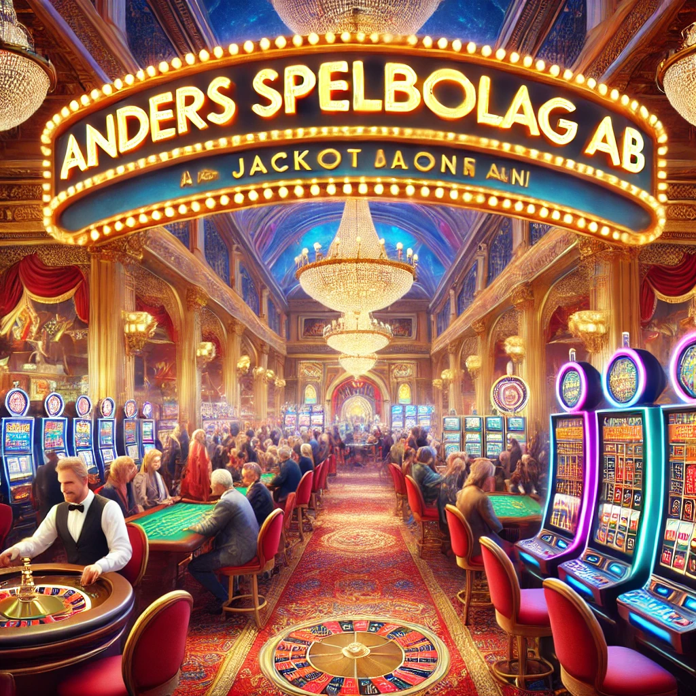

Anders Spelbolag AB är ett svenskt spelbolag med en spännande och ovanlig bakgrund. Företaget grundades ursprungligen i Rumänien av en grupp svenska entreprenörer som såg potentialen i den snabbt växande globala spelindustrin. Med en vision om att kombinera skandinavisk kvalitet med den tekniska kompetensen i Östeuropa, lyckades Anders Spelbolag AB snabbt etablera sig som en betydande aktör inom spelbranschen. Idag är bolaget baserat i Sverige och erbjuder en bred portfölj av tjänster inom både digitala casinospel och sportsbetting. 
När företaget startade fokuserade de främst på att utveckla och lansera egna casinospel, men efter några år expanderade verksamheten till att även inkludera sportsbetting och lotteritjänster. Den snabba tillväxten gjorde att bolaget snart flyttade sitt huvudkontor till Sverige för att få en starkare koppling till den nordiska marknaden. När den svenska spelmarknaden omreglerades 2019 blev Anders Spelbolag AB ett av de första bolagen att ansöka om en svensk spellicens. Med licensen på plats kunde företaget erbjuda sina tjänster på ett lagligt och ansvarsfullt sätt till svenska kunder. En viktig del av företagets strategi har varit att följa de svenska reglerna och säkerställa att deras tjänster främjar ansvarsfullt spelande.
Bolaget har skapat en spelplattform som erbjuder ett brett utbud av spel, inklusive digitala casinospel som slots, blackjack och roulette, samt live-casino med riktiga dealers. Dessutom finns ett omfattande utbud av sportsbetting där spelare kan satsa på fotboll, ishockey, e-sport och hästkapplöpning. Företaget samarbetar med flera stora spelleverantörer för att erbjuda spel från välkända utvecklare som NetEnt, Microgaming och Play’n GO.
En av de största framgångsfaktorerna för Anders Spelbolag AB har varit deras teknologiska innovationer. Genom att använda den senaste tekniken har de kunnat skapa en spelupplevelse som är både säker och engagerande. Deras plattform är byggd med användarvänlighet i fokus och erbjuder en sömlös upplevelse både på dator och mobil. Bolaget har också investerat i AI och maskininlärning för att förbättra kundupplevelsen och säkerheten. Exempelvis används AI-drivna algoritmer för att analysera spelbeteenden och upptäcka tecken på spelmissbruk, vilket gör att de kan erbjuda proaktiva åtgärder för att hjälpa spelare som riskerar att utveckla ett osunt spelande.
Som ett företag som verkar på den reglerade svenska spelmarknaden är ansvarsfullt spelande en av Anders Spelbolag AB:s högsta prioriteringar. De har implementerat flera verktyg och funktioner för att hjälpa spelare att kontrollera sitt spelande, inklusive självexkluderingsverktyg, insättningsgränser och realtidsvarningar. Företaget samarbetar även med organisationer som Stödlinjen för att erbjuda hjälp och rådgivning till spelare i behov.
Framåt planerar Anders Spelbolag AB att expandera sin verksamhet till fler europeiska marknader samtidigt som de fortsätter att växa på den svenska marknaden. De arbetar också på att utveckla nya spel och förbättra sin plattform genom avancerad teknik och innovationer. Ett annat fokusområde för framtiden är hållbarhet och socialt ansvar, där företaget planerar att investera i initiativ som främjar ansvarsfullt spelande och stödjer lokala samhällen. Med en stark grund och en tydlig vision ser Anders Spelbolag AB ut att bli en av de ledande aktörerna inom online-spel både i Sverige och internationellt.